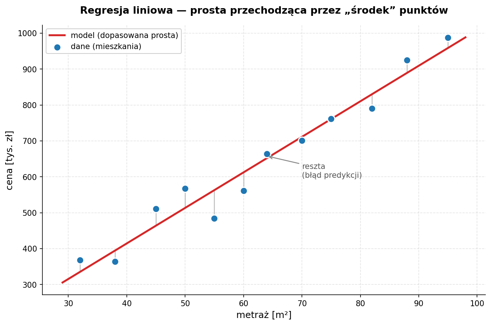

Zajęcia 4#
Regresja liniowa — od danych do działającego modelu#
Poprzednie zajęcia: poznaliśmy NLP i spaCy, a wcześniej zbudowaliśmy solidny fundament OOP. Dziś robimy duży krok w stronę uczenia maszynowego. Zbudujemy nasz pierwszy model predykcyjny — regresję liniową — ale (uwaga!) nie zaczniemy od trenowania. Zaczniemy od zrozumienia danych, bo "garbage in, garbage out" to nie jest tylko ładny cytat.
Po dzisiejszych zajęciach będziesz w stanie:
- wyjaśnić, czym jest regresja liniowa i co model tak naprawdę "uczy się" z danych,
- przeprowadzić analizę zbioru (EDA) zanim cokolwiek wytrenujesz,
- świadomie podzielić dane na zbiór treningowy i walidacyjny — i wiedzieć, po co to robimy,
- wytrenować model regresji w
scikit-learnw kilku linijkach, - ocenić jakość modelu za pomocą MAE, RMSE i R² oraz wykresu reszt,
- rozpoznać, kiedy model jest dobry, a kiedy tylko udaje, że jest.
Środowisko: Google Colab. Wszystkie biblioteki (
numpy,pandas,matplotlib,scikit-learn) są tam już zainstalowane.
1. Co to jest regresja liniowa?#
Intuicja#
Wyobraź sobie, że masz dane o mieszkaniach: metraż i cenę. Patrzysz na wykres punktowy i widzisz, że im większy metraż, tym wyższa cena. Punkty układają się mniej więcej w linię prostą.
Regresja liniowa to nic innego jak znalezienie tej najlepszej prostej — takiej, która przechodzi "jak najbliżej" wszystkich punktów. Mając taką prostą, możemy przewidzieć cenę mieszkania, którego nie ma w danych: podajemy metraż, odczytujemy cenę z linii.
Zobaczmy to na obrazku — szare pionowe odcinki to reszty (różnice między punktem a prostą); model dobiera prostą tak, żeby suma ich kwadratów (MSE) była najmniejsza:
import numpy as np
import matplotlib.pyplot as plt
from sklearn.linear_model import LinearRegression
# dane przykładowe (metraż -> cena w tys. zł), z lekkim szumem
rng = np.random.default_rng(42)
metraz = np.array([32, 38, 45, 50, 55, 60, 64, 70, 75, 82, 88, 95])
cena = (9500 * metraz + 50000 + rng.normal(0, 45000, size=metraz.shape)) / 1000
# dopasowanie prostej
X = metraz.reshape(-1, 1)
model = LinearRegression().fit(X, cena)
x_line = np.linspace(metraz.min() - 3, metraz.max() + 3, 100)
y_line = model.predict(x_line.reshape(-1, 1))
y_pred = model.predict(X)
fig, ax = plt.subplots(figsize=(9, 6))
# reszty: pionowe odcinki od punktu do prostej
for xi, yi, ypi in zip(metraz, cena, y_pred):
ax.plot([xi, xi], [yi, ypi], color="#bdbdbd", lw=1.2, zorder=1)
ax.plot(x_line, y_line, color="#d62728", lw=2.5,
label="model (dopasowana prosta)", zorder=2)
ax.scatter(metraz, cena, s=90, color="#1f77b4", edgecolor="white",
linewidth=1.5, zorder=3, label="dane (mieszkania)")
ax.set_xlabel("metraż [m²]")
ax.set_ylabel("cena [tys. zł]")
ax.set_title("Regresja liniowa — prosta przechodząca przez „środek” punktów")
ax.legend(loc="upper left")
ax.grid(True, linestyle="--", alpha=0.35)
ax.spines[["top", "right"]].set_visible(False)
fig.tight_layout()
plt.show()

Matematyka — mniej straszna niż wygląda#
Dla jednej cechy (np. metraż) model to po prostu równanie prostej, które znasz ze szkoły:
x— cecha wejściowa (metraż),ŷ("y daszek") — przewidywana wartość (cena),w— waga (slope, nachylenie) — o ile rośnie cena, gdy metraż rośnie o 1 m²,b— wyraz wolny (intercept) — wartość, gdyx = 0.
Dla wielu cech (metraż, liczba pokoi, piętro, ...) prosta zamienia się w hiperpłaszczyznę, a równanie rośnie:
To wciąż liniowy model — każda cecha ma swoją wagę, a my je sumujemy. Cała magia "uczenia" polega na znalezieniu takich w i b, które dają najlepsze predykcje.
Czego model się "uczy"?#
Model szuka wag, które minimalizują błąd między predykcją ŷ a rzeczywistą wartością y. Najczęściej używaną miarą błędu jest MSE (Mean Squared Error — średni błąd kwadratowy):
Czyli: dla każdego punktu liczymy różnicę (rzeczywista − przewidziana), podnosimy do kwadratu (żeby plusy i minusy się nie kasowały, i żeby duże błędy bolały bardziej), i uśredniamy.
Po co kwadrat? Gdybyśmy sumowali same różnice, błąd +10 i −10 dałyby 0 — model wyglądałby na idealny, mimo że się myli. Kwadrat to naprawia: każdy błąd jest dodatni, a te duże ważą nieproporcjonalnie więcej.
Algorytm (pod maską scikit-learn to metoda najmniejszych kwadratów) dobiera w i b tak, żeby ta liczba była jak najmniejsza. Na szczęście nie musimy robić tego ręcznie — od tego mamy bibliotekę.
🏋️ Zadanie 4.1 — Intuicja i ręczna predykcja (3 pkt)#
Zanim sięgniemy po scikit-learn, poczujmy mechanikę "na piechotę".
Załóżmy, że ktoś wytrenował dla nas prosty model ceny mieszkania:
(czyli w = 9500, b = 50000)
-
(1 pkt) Napisz funkcję
predict(metraz: float) -> float, która zwraca przewidywaną cenę dla podanego metrażu. Przetestuj dla 40, 60 i 75 m². -
(1 pkt) Masz prawdziwe ceny trzech mieszkań. Napisz funkcję
mse(y_true: list, y_pred: list) -> float, która liczy MSE ręcznie (bez bibliotek). Policz MSE dla danych poniżej. -
(1 pkt) Zmień
bz50000na100000i policz MSE jeszcze raz. Czy błąd wzrósł, czy zmalał? Napisz w komentarzu, co to mówi o tym, którybjest lepszy.
metraze = [40, 60, 75]
ceny_real = [430000, 620000, 770000]
# y_pred = [predict(m) for m in metraze]
# print(mse(ceny_real, y_pred))
2. Najpierw dane, potem model — analiza zbioru (EDA)#
Najważniejsza zasada dzisiejszych zajęć: nie trenujesz modelu na danych, których nie rozumiesz. Etap EDA (Exploratory Data Analysis) to nie strata czasu — to moment, w którym łapiesz literówki, braki, wartości odstające i cechy, które w ogóle nic nie wnoszą. Pominięcie tego etapu to najczęstszy powód, dla którego "model nie działa".
Wczytanie zbioru#
Użyjemy gotowego, wbudowanego w scikit-learn zbioru California Housing — dane o cenach mieszkań w Kalifornii. Cechy są zrozumiałe (mediana dochodu, wiek budynku, liczba pokoi...), a celem jest mediana wartości domu.
import pandas as pd
from sklearn.datasets import fetch_california_housing
dane = fetch_california_housing(as_frame=True)
df = dane.frame # gotowy DataFrame z cechami + kolumną celu
print(df.shape) # (20640, 9) — 20640 wierszy, 8 cech + 1 cel
df.head()
Kolumna celu nazywa się MedHouseVal (mediana wartości domu, w setkach tysięcy dolarów). Reszta kolumn to nasze cechy:
| Kolumna | Znaczenie |
|---|---|
MedInc |
mediana dochodu w dzielnicy |
HouseAge |
mediana wieku budynków |
AveRooms |
średnia liczba pokoi |
AveBedrms |
średnia liczba sypialni |
Population |
populacja dzielnicy |
AveOccup |
średnie zaludnienie domu |
Latitude / Longitude |
współrzędne geograficzne |
MedHouseVal |
cel — mediana wartości domu |
Pierwsze spojrzenie — info() i describe()#
df.info() # typy kolumn, ile wartości niepustych
df.describe() # statystyki: min, max, średnia, kwartyle
Na co patrzymy:
- Braki danych — czy
info()pokazuje mniej wartości niepustych niż wierszy? (tu akurat zbiór jest czysty, ale w prawdziwym świecie rzadko tak jest). - Zakresy — czy
min/maxmają sens? Ujemny wiek budynku albo cena 0 to sygnał ostrzegawczy. - Wartości odstające (outliers) — czy
maxnie odjeżdża absurdalnie od kwartyla 75% (AveRooms= 142 przy medianie ~5 to podejrzane).
Rozkłady cech — histogramy#
Histogram od razu pokazuje, czy cecha ma sensowny rozkład, czy jest "zlepiona" przy jednej wartości albo ucięta (np. cena w tym zbiorze jest sztucznie obcięta przy 5.0 — to artefakt danych, dobrze o nim wiedzieć).
Korelacje — które cechy w ogóle są przydatne?#
Regresja liniowa lubi cechy, które są liniowo powiązane z celem. Sprawdźmy to:
MedHouseVal 1.000000
MedInc 0.688075 ← dochód mocno koreluje z ceną — to będzie nasza gwiazda
AveRooms 0.151948
HouseAge 0.105623
...
Wniosek czytamy wprost: MedInc (dochód) to najsilniejszy predyktor ceny. Cechy o korelacji bliskiej zera prawdopodobnie niewiele wniosą do liniowego modelu.
Uwaga: korelacja Pearsona wykrywa tylko zależności liniowe. Cecha może być świetnym predyktorem w sposób nieliniowy i mieć korelację ~0. Dlatego korelacja to wskazówka, nie wyrok.
Wykres rozrzutu — zobacz zależność na oczy#
Widać tu wyraźny trend rosnący (im wyższy dochód, tym droższe domy) oraz tę poziomą "ścianę" na górze przy 5.0 — obcięcie ceny, które zauważyliśmy w histogramie.
Uwaga: przykłady powyżej liczyliśmy na zbiorze California Housing. Zadania robisz na innym zbiorze — Auto MPG (dane o autach z lat 1970–1982, gdzie celem jest
mpg, czyli spalanie w milach na galon — im więcej, tym oszczędniejsze auto). Te same kroki, inne dane — chodzi o to, żebyś samodzielnie przeszedł cały proces, a nie przepisał gotowca.
🏋️ Zadanie 4.2 — Analiza i czyszczenie zbioru (5 pkt)#
Wczytaj zbiór Auto MPG (jest wbudowany w seaborn):
-
(1 pkt) Wyświetl
shape,head()orazinfo(). W komentarzu napisz: ile jest wierszy, ile kolumn i czy są braki danych (podpowiedź:df.isna().sum()pokaże braki per kolumna — jedna z cech ma ich kilka). -
(1.5 pkt) Ten zbiór nie jest gotowy do regresji — trzeba go wyczyścić:
- usuń kolumny nienumeryczne (regresja liniowa przyjmuje tylko liczby — sprawdź, które kolumny to tekst),
- usuń wiersze z brakami danych (
dropna()).
Po czyszczeniu wyświetl nowy shape. W komentarzu napisz, ile wierszy i kolumn zostało i które kolumny usunąłeś.
-
(1 pkt) Na wyczyszczonych danych wywołaj
describe()oraz narysuj histogramy wszystkich cech (df.hist(...)). Wskaż w komentarzu jedną cechę, której rozkład jest wyraźnie skośny lub "skokowy". -
(1.5 pkt) Policz korelacje cech z
mpg, posortuj i wyświetl. Zwróć uwagę na znak — część cech będzie skorelowana ujemnie. Narysuj wykres rozrzutu (scatter) dla cechy o najsilniejszej korelacji (co do wartości bezwzględnej). W komentarzu napisz, czy zależność jest rosnąca, czy malejąca, i dlaczego to ma sens (pomyśl: cięższe auto = ?).
3. Podział na zbiór treningowy i walidacyjny#
Po co w ogóle dzielić dane?#
Załóżmy, że trenujemy model na wszystkich danych, a potem na tych samych danych sprawdzamy jego jakość. Model dostanie świetny wynik — bo widział już te odpowiedzi! To jak ocenianie ucznia po pytaniu go o zadania, które wcześniej rozwiązaliście razem na tablicy. Nic to nie mówi o tym, czy poradzi sobie na prawdziwym egzaminie.
Dlatego dzielimy dane na dwa rozłączne kawałki:
| Zbiór | Do czego służy | Typowy udział |
|---|---|---|
| Treningowy (train) | model uczy się na nim wag w, b |
~70–80% |
| Walidacyjny / testowy (test) | sprawdzamy jakość na danych, których model nigdy nie widział | ~20–30% |
To jedyny uczciwy sposób, żeby ocenić, jak model zachowa się na nowych danych.
Overfitting — uczeń, który wykuł odpowiedzi na pamięć#
Jeśli model świetnie radzi sobie na treningu, ale słabo na teście — mamy przeuczenie (overfitting). Model "wykuł" dane treningowe zamiast nauczyć się ogólnej reguły. Podział train/test jest naszym wykrywaczem tego problemu.
train_test_split#
scikit-learn robi podział za nas:
from sklearn.model_selection import train_test_split
# X — cechy (wszystko oprócz celu), y — cel
X = df.drop(columns=["MedHouseVal"])
y = df["MedHouseVal"]
X_train, X_test, y_train, y_test = train_test_split(
X, y,
test_size=0.2, # 20% danych ląduje w teście
random_state=42 # ziarno losowości — żeby podział był powtarzalny
)
print(X_train.shape, X_test.shape) # np. (16512, 8) (4128, 8)
random_state=42— ustawienie ziarna gwarantuje, że za każdym uruchomieniem dostaniesz ten sam podział. Bez tego porównywanie wyników między uruchomieniami nie miałoby sensu. (Liczba 42 to żart programistów — może być dowolna, byle stała).
🏋️ Zadanie 4.3 — Podział danych (3 pkt)#
Pracujesz na wyczyszczonym zbiorze MPG z zadania 4.2.
-
(1 pkt) Rozdziel zbiór na cechy
X(wszystkie kolumny oprócz celu) i wektor celuy(mpg). -
(1.5 pkt) Podziel dane na treningowe i testowe w proporcji 75/25 (
test_size=0.25), ustawiającrandom_state=42. Wyświetl kształty (shape) wszystkich czterech wynikowych zbiorów. -
(0.5 pkt) W komentarzu odpowiedz krótko: dlaczego ustawiamy
random_statei co by się stało, gdybyśmy oceniali model na zbiorze treningowym zamiast testowym?
4. Trenowanie modelu#
Teraz część, na którą wszyscy czekali — i która, jak się okaże, jest najkrótsza. Cała ciężka praca była wcześniej.
from sklearn.linear_model import LinearRegression
model = LinearRegression()
model.fit(X_train, y_train) # <- tu dzieje się "uczenie"
Tyle. Po fit() model ma już dobrane wagi. Możemy je podejrzeć:
print("Wyraz wolny (b):", model.intercept_)
print("Wagi (w):")
for cecha, waga in zip(X_train.columns, model.coef_):
print(f" {cecha:<12} {waga:.4f}")
Wagi są interpretowalne — to jedna z najpiękniejszych cech regresji liniowej. Dodatnia waga przy MedInc oznacza: "gdy dochód w dzielnicy rośnie, przewidywana cena rośnie". To nie czarna skrzynka — widzimy, na co model patrzy.
Predykcja na nowych danych#
y_pred = model.predict(X_test) # predykcje dla zbioru, którego model nie widział
# Porównanie kilku pierwszych predykcji z rzeczywistością:
for real, pred in zip(y_test[:5], y_pred[:5]):
print(f"rzeczywista: {real:.2f} przewidziana: {pred:.2f}")
🏋️ Zadanie 4.4 — Trenowanie i interpretacja (4 pkt)#
-
(1 pkt) Wytrenuj
LinearRegressionna zbiorze treningowym z poprzedniego zadania. -
(1.5 pkt) Wyświetl wyraz wolny oraz wagi dla wszystkich cech (ładnie sformatowane, z nazwami kolumn). Wskaż w komentarzu cechę o największej dodatniej i największej ujemnej wadze i napisz jednym zdaniem, jak je interpretujesz (np. „ujemna waga przy
weightznaczy, że cięższe auto pali więcej, więcmpgspada"). -
(1.5 pkt) Zrób predykcję na zbiorze testowym (
predict) i wyświetl porównanie 5 pierwszych predykcji z wartościami rzeczywistymi. Czy model "trafia w okolice"?
5. Ewaluacja modelu — czy on jest w ogóle dobry?#
Predykcje mamy. Teraz pytanie za 5 punktów: jak dobre one są? Do tego służą metryki.
Trzy metryki, które musisz znać#
import numpy as np
from sklearn.metrics import mean_absolute_error, mean_squared_error, r2_score
mae = mean_absolute_error(y_test, y_pred)
mse = mean_squared_error(y_test, y_pred)
rmse = np.sqrt(mse)
r2 = r2_score(y_test, y_pred)
print(f"MAE: {mae:.3f}")
print(f"RMSE: {rmse:.3f}")
print(f"R²: {r2:.3f}")
| Metryka | Co mierzy | Jak czytać |
|---|---|---|
| MAE (Mean Absolute Error) | średni błąd bezwzględny | "średnio mylę się o tyle". W tych samych jednostkach co cel — łatwa do interpretacji |
| RMSE (Root MSE) | pierwiastek z MSE | jak MAE, ale mocniej karze duże błędy. Też w jednostkach celu |
| R² (współczynnik determinacji) | jaki % zmienności celu model wyjaśnia | 1.0 = ideał, 0.0 = model nie lepszy niż "zgaduj średnią", < 0 = gorszy niż średnia |
MAE czy RMSE? Jeśli pojedyncze duże pomyłki są groźne (np. wycena nieruchomości) — patrz na RMSE, bo ono je wyłapuje. Jeśli chcesz prostej, odpornej na outliery liczby — MAE. W praktyce raportuje się oba.
Wykres reszt — diagnostyka, której metryki nie pokażą#
Reszta (residual) to różnica między wartością rzeczywistą a przewidzianą: y - ŷ. Wykres reszt względem predykcji to najważniejsze narzędzie diagnostyczne regresji:
reszty = y_test - y_pred
plt.figure(figsize=(8, 6))
plt.scatter(y_pred, reszty, alpha=0.2)
plt.axhline(y=0, color="red", linestyle="--")
plt.xlabel("Przewidziane wartości")
plt.ylabel("Reszty (y - ŷ)")
plt.title("Wykres reszt")
plt.show()
Jak czytać:
- Reszty losowo rozrzucone wokół zera → dobrze, model nie ma systematycznego błędu.
- Widoczny wzór (np. lejek, łuk) → model coś przeoczył; być może zależność jest nieliniowa albo brakuje ważnej cechy.
To jest moment, w którym wracasz do etapu 2 (EDA) i kombinujesz dalej. Modelowanie to pętla, nie linia prosta.
🏋️ Zadanie 4.5 — Ewaluacja (5 pkt)#
-
(2 pkt) Policz i wyświetl MAE, RMSE oraz R² dla predykcji na zbiorze testowym. W komentarzu napisz, ile procent zmienności ceny wyjaśnia model (na podstawie R²) i czy uważasz, że to dużo, czy mało.
-
(1 pkt) Policz te same trzy metryki na zbiorze treningowym (predykcja na
X_train). Porównaj z wynikami testowymi. W komentarzu: czy widać oznaki przeuczenia (duża różnica train vs test)? -
(1.5 pkt) Narysuj wykres reszt (
y_test - y_predwzględemy_pred) z poziomą linią na zerze. Opisz w komentarzu: czy reszty są losowo rozrzucone, czy widać jakiś wzór? -
(0.5 pkt) Wytrenuj drugi model regresji używając tylko jednej cechy
weight— najsilniej skorelowanej z celem (przekażX_train[["weight"]]). Porównaj jego R² z modelem na wszystkich cechach. Czy więcej cech pomogło?
Łączymy wszystko — pełny pipeline w jednej klasie#
Na zakończenie spięjmy cały dzisiejszy workflow w jedną klasę (ukłon w stronę OOP z poprzednich zajęć). To opcjonalne, ale pokazuje, jak w praktyce porządkuje się taki kod:
import numpy as np
import pandas as pd
from sklearn.model_selection import train_test_split
from sklearn.linear_model import LinearRegression
from sklearn.metrics import mean_absolute_error, mean_squared_error, r2_score
class RegressionPipeline:
"""Spina cały workflow: dane → podział → trening → ewaluacja."""
def __init__(self, df: pd.DataFrame, target: str, test_size: float = 0.2):
if target not in df.columns:
raise ValueError(f"Brak kolumny celu '{target}' w danych.")
self.target = target
self.model = LinearRegression()
X = df.drop(columns=[target])
y = df[target]
self.X_train, self.X_test, self.y_train, self.y_test = train_test_split(
X, y, test_size=test_size, random_state=42
)
def train(self):
self.model.fit(self.X_train, self.y_train)
return self
def evaluate(self) -> dict:
y_pred = self.model.predict(self.X_test)
return {
"MAE": mean_absolute_error(self.y_test, y_pred),
"RMSE": np.sqrt(mean_squared_error(self.y_test, y_pred)),
"R2": r2_score(self.y_test, y_pred),
}
def __str__(self):
return (f"RegressionPipeline(cel='{self.target}', "
f"train={len(self.X_train)}, test={len(self.X_test)})")
# Użycie (przykład wciąż na California Housing):
from sklearn.datasets import fetch_california_housing
dane = fetch_california_housing(as_frame=True)
pipe = RegressionPipeline(dane.frame, target="MedHouseVal").train()
print(pipe)
print(pipe.evaluate())
Widzisz, jak __init__, walidacja przez ValueError i __str__ z poprzednich zajęć wracają tu naturalnie? Dobry kod ML to najpierw dobry kod, a dopiero potem ML.
Podsumowanie punktacji#
| Zadanie | Temat | Punkty |
|---|---|---|
| 4.1 | Intuicja i ręczna predykcja (MSE) | 3 |
| 4.2 | Analiza zbioru (EDA) | 5 |
| 4.3 | Podział train/test | 3 |
| 4.4 | Trenowanie i interpretacja wag | 4 |
| 4.5 | Ewaluacja (MAE / RMSE / R² / reszty) | 5 |
| Suma | 20 |
Pamiętaj: maksymalne 20 pkt zdobywasz, prezentując rozwiązanie prowadzącemu na zajęciach. Zadanie wysyłasz na Moodle najpóźniej dzień przed kolejnymi zajęciami.